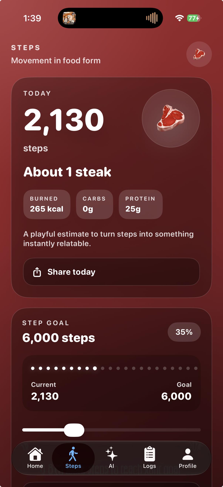

GlucoMood

Health tracking reimagined, connecting your glucose and your emotions.
GLUCOMOOD TIMELINE
01 — Why I Started GlucoMood
GlucoMood started with a simple idea: health tracking did not have to feel cold or clinical. I wanted glucose tracking to feel more visual, approachable, and connected to everyday life. Instead of building another screen full of numbers, I wanted to create something that could communicate how different glucose states actually feel.
02 — Humanizing the Data
A lot of health apps are designed around numbers first. I wanted GlucoMood to put the person behind those numbers first. Different glucose ranges became expressive visual states, using changing environments, colors, and emotions to make information easier to recognize at a glance while still keeping the underlying health data clear.
03 — Building the Tracker
The idea eventually became a working SwiftUI app for logging glucose, medications, activity, workouts, and other health information. I built persistent history so users could look back at their data over time instead of treating each reading as an isolated moment. The visual experience changes with glucose state while keeping the actual reading at the center.
04 — Movement in Food Form
While building the activity side of GlucoMood, I wanted movement to feel more rewarding than another step counter. That became “Movement in Food Form,” a playful feature that turns daily movement into food equivalents and gives users a different way to understand their activity. Users can set their own step goal, and the food equivalent changes as they keep moving.

05 — Connecting Apple Health
I integrated HealthKit so GlucoMood could work with activity and workout information already available through Apple Health. Steps, walking and running distance, and workouts can become part of the experience without requiring users to manually enter everything. I wanted health integration to support the app quietly in the background rather than turn GlucoMood into another complicated dashboard.
06 — Mimi AI
Mimi started as an idea for making GlucoMood feel more supportive, but eventually became a working AI wellness companion inside the app. She can have contextual conversations and respond to glucose information when it is available, while staying within clear safety boundaries. Mimi is designed for encouragement and general wellness support, not diagnosis, medication changes, insulin dosing, or replacing medical care.

Mimi's brain lives as a Supabase Edge Function, not client-side Swift, so the OpenRouter API key never ships inside the app bundle at all — it's pulled from a server-side environment secret. This is the actual deployed source, safety guardrails and all.
const corsHeaders = {
"Access-Control-Allow-Origin": "*",
"Access-Control-Allow-Headers": "authorization, x-client-info, apikey, content-type",
"Access-Control-Allow-Methods": "POST, OPTIONS",
}
const qwenModel = "qwen/qwen-2.5-7b-instruct"
const systemPrompt =
"You are Mimi Ai, GlucoMood's caring AI diabetes companion and personal diabetes coach. You are available whenever the user wants support, encouragement, education, help understanding logged information, or someone supportive to talk to about living with diabetes. Speak like a warm, patient, positive, nonjudgmental best friend who genuinely cares about the user's wellbeing. You can celebrate progress, help users stay motivated, and explain general diabetes concepts, glucose patterns, lifestyle habits, exercise, food choices, and feelings associated with glucose changes. You are not a doctor and not a replacement for professional medical care. Do not diagnose conditions, prescribe treatment, change medications, or tell users how much insulin or medication to take. If the user describes potentially dangerous readings or serious symptoms such as chest pain, fainting, confusion, seizure, trouble breathing, feeling unsafe, or a medical emergency, encourage urgent medical care or emergency help right away. Do not be sexual, erotic, explicit, or flirtatious. Keep replies conversational, supportive, and practical."
type MimiRequest = {
message: string
glucoseState?: "low" | "normal" | "caution" | "high"
glucoseValue?: number
trend?: "rising" | "flat" | "falling"
history?: Array<{
role: "user" | "assistant"
text: string
}>
}
Deno.serve(async (request) => {
if (request.method === "OPTIONS") {
return new Response("ok", { headers: corsHeaders })
}
if (request.method !== "POST") {
return jsonResponse({ error: "Method not allowed" }, 405)
}
const openRouterKey = Deno.env.get("OPENROUTER_API_KEY")
if (!openRouterKey) {
return jsonResponse({ error: "Missing OPENROUTER_API_KEY secret" }, 500)
}
let body: MimiRequest
try {
body = await request.json()
} catch {
return jsonResponse({ error: "Invalid JSON body" }, 400)
}
const message = body.message?.trim()
if (!message) {
return jsonResponse({ error: "Message is required" }, 400)
}
const promptContext = [
body.glucoseState ? `Glucose state: ${body.glucoseState}` : null,
typeof body.glucoseValue === "number" ? `Glucose value: ${body.glucoseValue} mg/dL` : null,
body.trend ? `Trend: ${body.trend}` : null,
]
.filter(Boolean)
.join("\n")
const messages = [
{ role: "system", content: systemPrompt },
...(body.history ?? []).map((entry) => ({
role: entry.role === "assistant" ? "assistant" : "user",
content: entry.text,
})),
{
role: "user",
content: [promptContext, `User says: ${message}`].filter(Boolean).join("\n\n"),
},
]
const openRouterResponse = await fetch("https://openrouter.ai/api/v1/chat/completions", {
method: "POST",
headers: {
"Content-Type": "application/json",
Authorization: `Bearer ${openRouterKey}`,
},
body: JSON.stringify({
model: qwenModel,
messages,
max_tokens: 300,
temperature: 0.85,
}),
})
const data = await openRouterResponse.json()
if (!openRouterResponse.ok) {
return jsonResponse(
{
error: "OpenRouter request failed",
details: data?.error?.message ?? JSON.stringify(data),
},
502,
)
}
const reply = data?.choices?.[0]?.message?.content?.trim() ?? ""
if (!reply) {
return jsonResponse({ error: "OpenRouter returned an empty response" }, 502)
}
return jsonResponse({ reply })
})
function jsonResponse(payload: unknown, status = 200) {
return new Response(JSON.stringify(payload), {
status,
headers: {
...corsHeaders,
"Content-Type": "application/json",
},
})
}07 — Making Movement Rewarding
I wanted free users to have another way to spend more time with Mimi without simply hitting a paywall. GlucoMood rewards movement with additional Mimi messages after reaching a walking and running distance goal. I built the system with daily limits, earned Movement Messages, expiration rules, and Premium access so the different paths work together without taking away the incentive to stay active.
For users who want unrestricted access, I also implemented GlucoMood Premium with StoreKit 2 subscriptions and purchase restoration.
08 — From Idea to App Store
GlucoMood grew far beyond the app I originally planned. Some ideas changed, some were dropped, and new ones such as Movement in Food Form and Mimi became central to the experience. Along the way I worked with SwiftUI, SwiftData, HealthKit, StoreKit 2, ActivityKit, AI/API integration, and the App Store submission process.
GlucoMood 1.0 was submitted to Apple for App Store review in September 2026. Building it taught me as much about making product decisions and knowing what not to build as it did about writing the code.
What I’m trying to accomplish
At its core, GlucoMood is my attempt to make everyday health tracking feel less intimidating and more human. I wanted to combine useful health information with expressive design, movement, and supportive technology without pretending that an app can replace professional medical care.
GlucoMood also represents how I've grown as an iOS developer. It started as a relatively focused glucose-tracking idea and evolved into a complete product that required me to think about persistence, HealthKit, AI integration, subscriptions, privacy, safety, accessibility, App Store requirements, and the experience of using all of those pieces together.